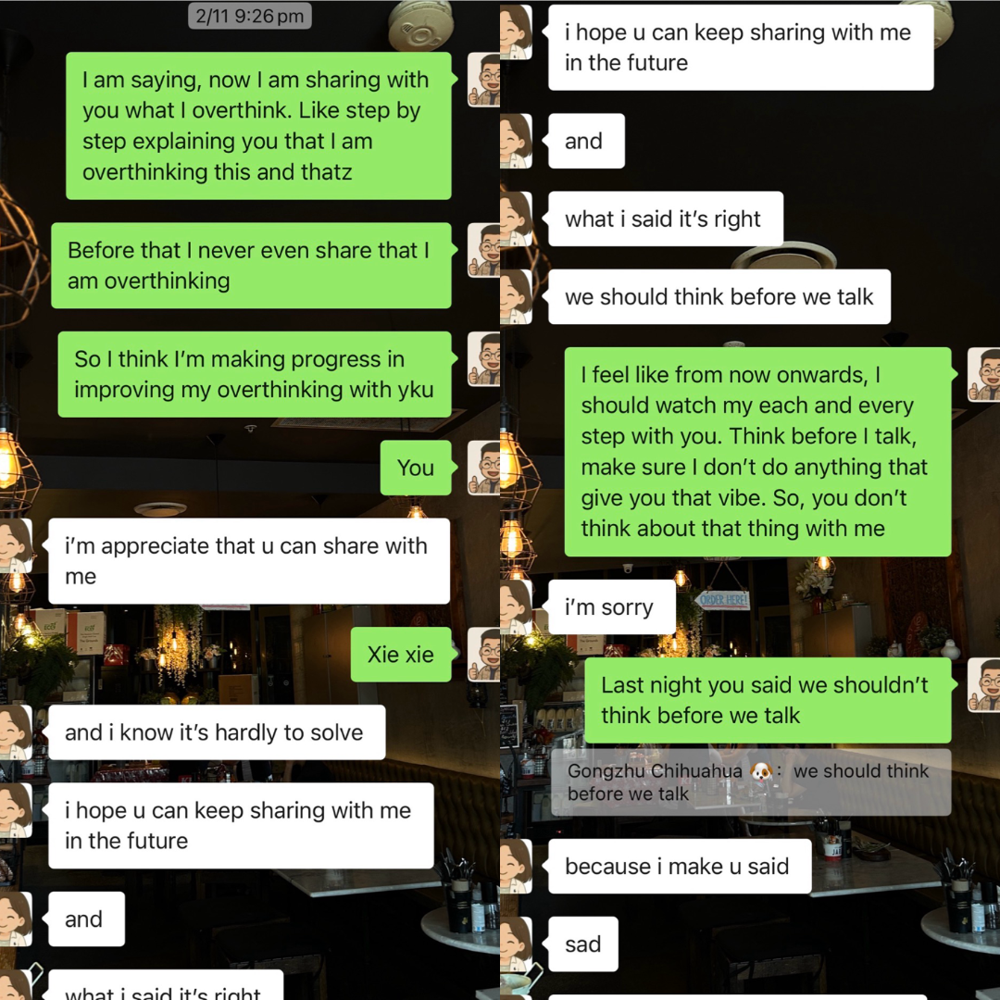
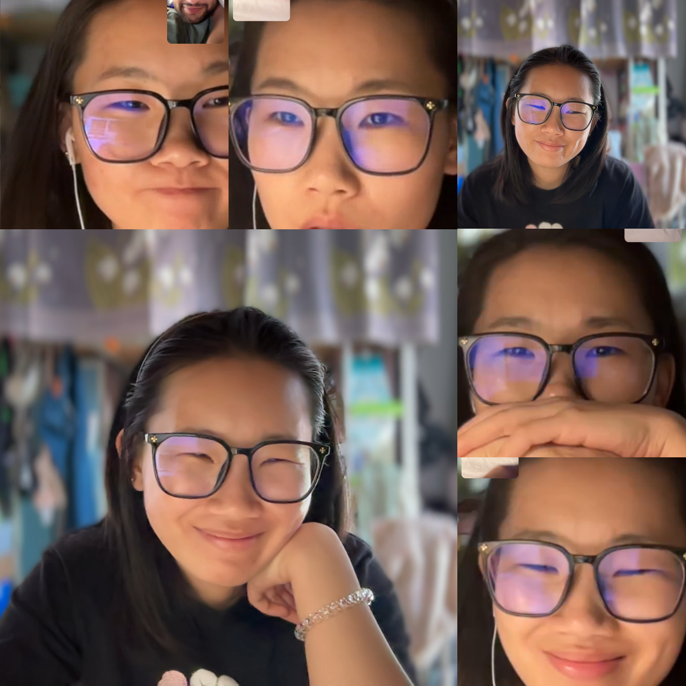
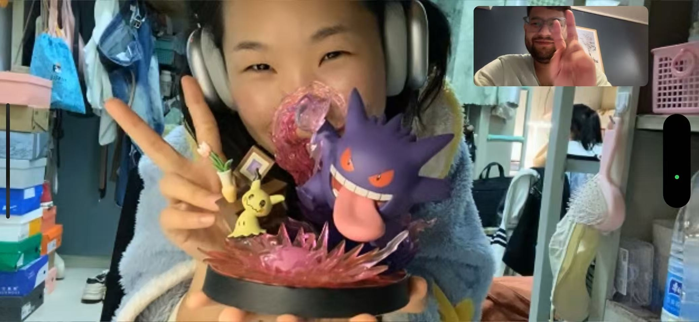
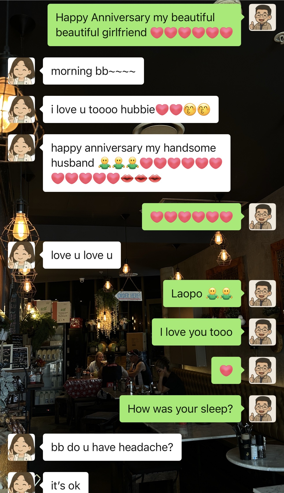
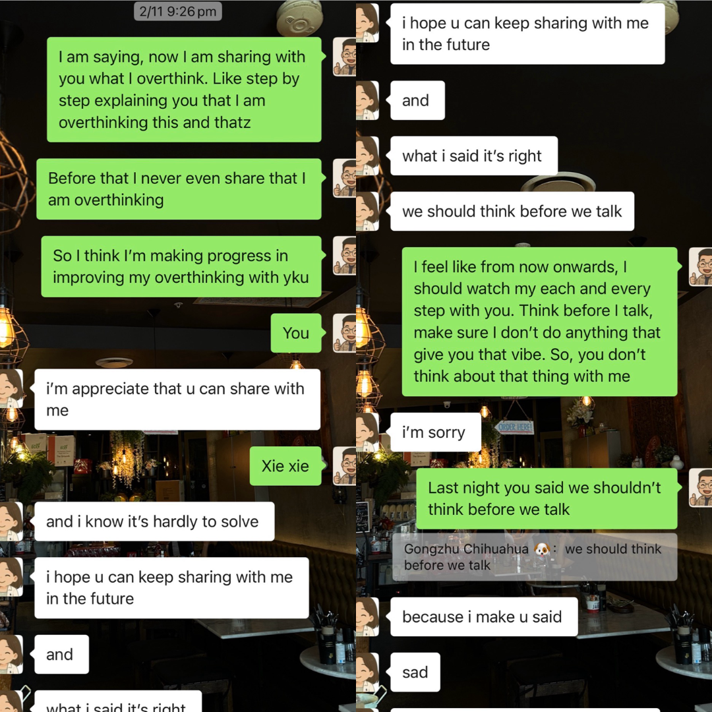
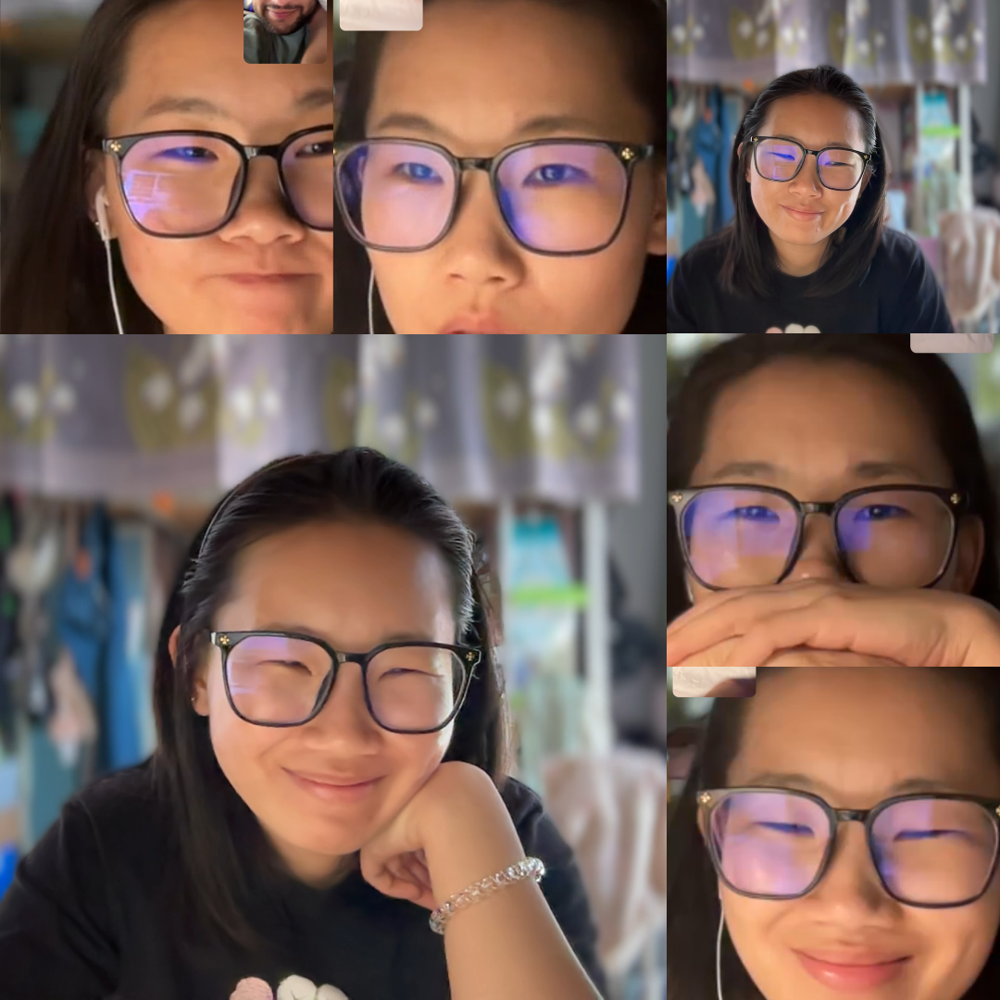
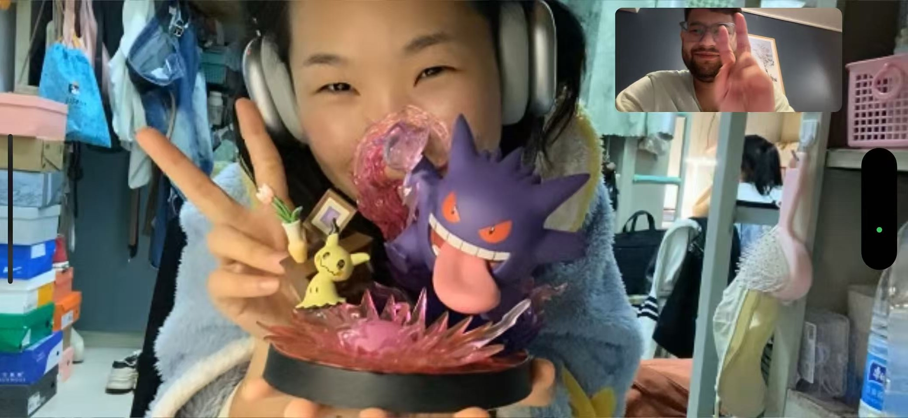
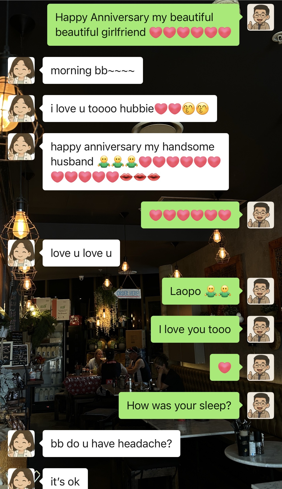

Our Journey Together 💕
The First Spark ✨
Our first hello / how it all began.
Baobao, I know this screenshot is not our first hello, but I still remember the day when I first saw you on Ome.tv and the conversation never felt like it was the first time we are seeing each other. The interesting topic we started discuss with each other, the wounds we healed for each other. I loved every bit of that.
Funny Beginning 😂
Next, it comes down to our flirting stage haha. We sure had the best moments here.
First Special Moments 🎂
1. 8th February - The day we did skin care for the first time. 💆♀️
2. 11th February - The day I realized you were important to me. 💖
3. 1st March - The day I was mesmerized by your cuteness. 🥰
4. 12th February - The day you sang a song for me for the first time. 🎤🎶
5. 27th April - The day we celebrated my birthday for the first time. 🎂🎉
6. 30th September - The day we celebrated our first Anniversary. 💞✨
 







The Everyday Routine 💫
I really love your constant good night messages. Every morning, I wake up and see them first thing — it always makes my day start with a smile. 🌙
These are the screenshots from each month, from February till now, showing how this small routine has played a big part in our relationship. It’s a beautiful reminder that consistency truly matters. 💖
“I Knew I Liked You” 💌
The moment I couldn’t stop smiling about you.
Haha, you can say these are not your best pictures, but I really love the memory behind them.
Building Connection 🌱
They say love isn’t something that happens overnight — it’s a feeling that quietly grows with time.
Baobao, we may have started off playfully flirting, but when you watch this video, you’ll see how beautifully our relationship has matured. In such a short time, we’ve experienced so many emotions together — laughter, sadness, anger, peace — and through it all, we’ve only grown closer. I truly hope our bond continues to grow stronger with every passing day. 💞